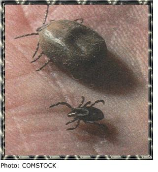
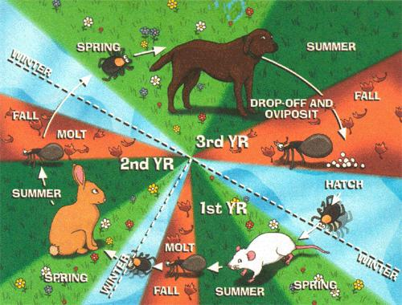

BACK COUNTRY SKILLS
Freedom from tiny freeloaders.
‹ An engorged tick dwarfs its unfed neighbor.
One of the best things about growing up in the country is being able to go outside anytime you want. One of the worst things is all the bugs you have to put up with especially ticks. I remember as a boy how we'd "look" ourselves for ticks after playing outside. Often, we'd find one or two. Sometimes we'd be covered-on our pants, down our shirts, in our ears. It was the kind of thing that made you want to spit. And always there was the fear you might get Rocky Mountain spotted fever.
The experience raised a lot of questions for me: Where do ticks come from? How can there he so many? (We found three in my cousins ear once after collecting pop bottles from along the road!) What should you do after a tick has latched on? And how dangerous is Rock Mountain spotted fever. anyway?
Before jumping into these ticklish queries, a little background, taxonomically speaking, is in order. First, there's, the animal kingdom that much is easy Then phylum: for ticks it's Arthropoda which in layman's terms means joint legged creature. Next is class: spiders, scorpions, ticks and mites (all of which have eight legs and no antennae) make up the Arachnida class. Ticks are then singled out under the super family Ixodoidea and then divided into two distinct subfamilies, Argasidae (soft ticks) and Ixodidae (hard ticks) Distinctions within a family are denoted by genus and species, with about 800 species described worldwide.
Both hard and soft ticks are potential disease carriers, but hard ticks are the main vectors in transmitting tick-borne diseases to man.
Where do ticks come from? They come from eggs a one-time batch of as many as 5,000 per female in hard-tick species. The larvae that hatch out are called seed ticks. These are not "worms." as the stage name might suggest, but miniature versions of adult ticks. Seed ticks have only six legs and are unable to reproduce. Their top priority is getting their first meal.
For a deer tick-the primary carrier of Lyme disease-this is not what you'd call an exercise in fine dining. Deer ticks prefer back-alley eateries like the Rat's Back or Mouse Far Lounge. The meals at these places are enormous. Adult ticks can take on anywhere from 200 to 600 times their unfed body weight. But as it goes with back-alley eateries, sanitation is sometimes a problem. And so along with its meal, the lama may also ingest a spiral shaped spirochete bacterium known as Borrelia burgdorferi, the organism that causes Lyme disease.
After completing the meal (and while .still hanging out at the Rat's Back), the larva molts. forming an eight legged nymph. Then it's back to the buffet for meal number two. When this engorgement is complete, the nymph drops off the host and hides in leaf litter to molt into an adult capable of reproduction-capable, that is, after a third and final feeding.
With this meal as its goal, the adult tick climbs a blade of grass or a weed stem. Then. when it detects movement, heat or the "smell" of CO2, it waves it,, forelegs in the air, hoping to catch a ride with some unsuspecting traveler in this case, usually a deer. Tick and mite experts (acarologists) call this behavior "questing."
It can take several months for a tick to make contact with a suitable host. As one writer puts it. ticks are "great exponents of the gentle an of waiting." Just hog, many die in the process is not known. What we do know is that adult ticks can live up to five years without feeding. And little Honder: According to Cynthia Mills, a doctor of veterinary science from Salem, Oregon, ticks are able to "suck water from the air, and [they] bother to breathe [only] four times a day." As one researcher puts it. "Nothing's on but the pilot light."
That's one reason why ticks are sometimes so plentiful. Other factors include El Nino winters and, of course. the number of eggs the females lay. And as for those times when you end up with three ticks in one ear, as my cousin did? Its possible that You've stumbled into a nest of recently hatched larvae. But a more likely explanation comes from a team of Ohio State University- scientists: ticks, it seems, are drawn to roadsides by simple vehicle activity-the aforementioned movement, heat and CO, from exhaust. A technical but good paper on the subject is available on-line, under the user-friendly heading 'Why Did the Tick Cross the Road?' at www.biosci.ohio-state.edu/~acarolog/acar-hp.htm
So does all of this mean that anyone taking a walk on a country road may as well hang a sign around his neck, reading: "Tick Bait?" No, but it does mean you should it go tromping in ditches in the middle of summer, when ticks are most active. Other ways to protect yourself are pretty much common sense:
Keep the area around your home free of tall grass and weeds.
Stay to the center of pathways when walking through places you know to be tick-infested.
Wear light-colored clothing with long sleeves and tuck your pants into your hoots.
Use a DEET-based repellent topically. DEET has come under criticism recently, but no other topical treatment is more effective.
Use a permethrin-based repellent on outer clothing. Permethrin is a synthetic version of pyrethrum, a chrysanthemum extract.
And don't forget to look over yourself and your kids every few hours; tick-borne diseases are not passed to a host immediately, so removal of a tick, even three hours after the initial bite, greatly reduces the chance of disease transmission.
Hey, It's a Dog Tick's Life
Not all ticks have the same life cycle. Some spend each stage (larva, nymph and adult) on the same host. Others, like the black-legged deer tick, follow a two-host, two-year regimen. And still others, like the American dog tick (Dermacentor variabilisl, move from host to host with each life stage, living usually for three years (see above). In each case, the fed adult ticks die after reproducing.
CHART ILLUSTRATION: KENNETH LIN
Unloading a Freeloader
-----------------
What is the best way to remove a tick? First off, forget using petroleum jelly, alcohol, fingernail polish or the ever popular hot match. These methods don t work and may even cause a tick to defecate or regurgitate fluid back into the host.
The tried-and-true method is manual tick-picking. Ticks secrete a kind of cement that bonds their mouth pairs to a host, so removal ran be a challenge. But there are tools on the market that will enhance your success. These devices are designed to get a firm grip on the head of the tick so that it's not left behind.
If a tick tool seems a bit much, then common tweezers and latex gloves will work just fine. Take care not to squeeze the tick's body with the tweezers, as this can inject spirochete laden gut juices into the bite. And afterward, be sure to wash your hands thoroughly.
Some folks save a tick once it's been removed. This is not a bad idea. If you or a pet has been infected, having the tick on hand (no pun intended) will make it easier to test for a particular disease. Keep the tick in an airtight vial or some similar container. Putting a straight pin through the tick (as when collecting insects) is a definite no-no; this can pierce the gut region, which may contain dangerous pathogens.
How dangerous? In some areas of the country Connecticut, Rhode Island and New York State in particular-Lyme disease has become a serious concern. Early diagnosis is the key to treatment. Most people who are given antibiotics soon after being infected recover rapidly and completely. Unfortunately, however, cases of chronic Lyme disease are not rare. The good news is that a vaccination has recently been approved by the FDA and is now available by prescription (see "New Vaccine May Lick Lyme Disease," page 20).
Though far less common than Lyme disease, Rocky Mountain spotted fever is considerably more dangerous. Most cases occur in the eastern United States, despite the regional name. The American dog tick is the primary carrier of the disease. Again, early diagnosis is key. Symptoms include the sudden onset of fever, myalgia and severe headache with or without the red-spotted rash. If treatment occurs within five days of noticeable symptoms, the mortality rate is 6.5%. After five days, it jumps to 22.9%. Vaccinations are available.
So when you head outdoors this summer, enjoy yourself to the top, but remember one thing: ticks the seas onto be cautiousness.
NEW VACCINE MAY LICK LYME DISEASE
During the last two decades, Lyme disease has emerged as the most common tickborne illness in the United States, with nearly 100,000 cases reported to the Centers for Disease Control since 1982.
A multistage bacterial infection, Lyme disease can produce a range of ailments from skin rash to flu-like symptoms to arthritis to cardiac irregularities. But even more frightening are those instances in which the disease remains asymptomatic-for months or even years following the initial tick bite-only to manifest itself in its very late stages in the form of severe arthritis or potentially debilitating neurological problems.
And since the vector for this insidious disease is the so-minuscule-it's-hard-to-spot deer tick, most folks will never know they've been bitten unless or until symptoms appear. That's why prevention is vital.
Enter LYMErix(TM), the first-ever vaccine for Lyme disease. In extensive clinical trials, LYMErixITM) was shown to be both safe and effective in preventing symptomatic and asymptomatic forms of the disease in individuals age 15 to 70. Approved by the FDA last December, LYMErix is now available by prescription.
The vaccine is recommended for folks who live, work or play in high-incidence areas, including the Northeast, upper Midwest and Pacific coastal regions. It carries a small risk of injection-site reaction, including redness, swelling and possibly joint or muscle pains.
For more information about Lyme disease or the vaccine, talk to your doctor, call the LYMErix toll-free hotline at 1-888-LYMErix ext. 500, or visit the Web at www.lymerix.com/ . LYMErix is manufactured by SmithKline Beecham Biologicals.
Resources
The Lyme Disease Network:
www.lymenet.org /
The Lyme Disease Information Resource:
www.x-1.net/Lyme/index.html
The Centers for Disease Control and Prevention:
www.cdc.gov/
The Tick Research Laboratory:
www.uri.edu/artsci/zool/ticklab/
The Ohio State University Acarology Laboratory:
www.biosci.ohio-state.edu/~acarolog/acar-hp.htm
|
 |
 |
|